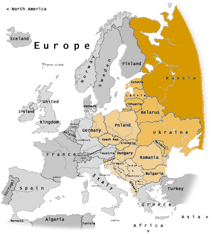

Bush Library Memcons and Telcons
The public list is drawn from the Bush Library Memcons and Telcons table and matched to National Archives Catalog records and official PDF scans.
FRUS 1989-1992, Volume V
A companion finding aid for the forthcoming Foreign Relations of the United States, 1989-1992, Volume V, Eastern Europe. This view is limited to declassified presidential memcons and telcons with official Catalog/PDF links, deduped by archival identifier and arranged by country chapter.

memcons/telcons
country chapters
full releases
partial releases
PDF pages counted
Country Chapters
Document Sources
The public list is drawn from the Bush Library Memcons and Telcons table and matched to National Archives Catalog records and official PDF scans.
Full and partial releases are included. Denied, pending, source-folder, event-anchor, policy-gap, and adjacent-volume records are excluded from this document view.
Each document appears once using NAID first, PDF URL second, and a date/type/title fallback only when archival identifiers are absent.
Page totals are counted from the linked official PDF scans, not from larger archival folders or future candidate packets.
Records remain assigned to country chapters only. Estonia, Latvia, Lithuania, Yugoslavia, and Ukraine are omitted for adjacent-volume scope.
The source audit and dedup report remain linked so the compiler can confirm what was included, excluded, and counted.
FRUS Production Lens
FRUS memcons are placed by the date and time of the conversation, not the drafting date. Rows use the conversation date and flag time verification for PDF review.
Each row separates a FRUS-style source note from compiler metadata: repository, collection, series, file unit, NAID, digital object, release status, links, and page count.
Full and partial releases remain filterable so excisions and page counts can be checked before a record is promoted into a draft.
Search spans leaders, countries, NAIDs, topics, source notes, and next actions to help locate related documents and editorial-note leads.
Deduping protects the document list from double-counting while preserving cross-border country metadata for volume-level coverage checks.
Copy buttons generate source-note and working citation text in the style of Volume XXXI, reducing repetitive hand transcription.
Method source: Office of the Historian, About the Foreign Relations Series .
Compiler Risk
This page is a presidential memcon/telcon index, not the full FRUS source universe. State, NSC staff, post, intelligence, Defense/JCS, and interagency files still need separate searches.
Poland, Hungary, and Czechoslovakia dominate. Bulgaria has 2 retained records, Romania has 1, and Albania has no retained released Bush presidential memcon/telcon record.
The retained conversations do not fully cover Romania 1989, Albania's opening, Zhivkov's fall, Warsaw Pact/CMEA dissolution, or assistance and recognition policy.
Ten Scowcroft source folders totaling 927 pages remain folder-level leads, not itemized document candidates.
Classification, distribution, drafting information, marginalia, excisions, and Washington conversation time still require PDF-level review.
East Germany/GDR was missing because de Maiziere rows were cataloged under Germany. Both June 11, 1990 memcons are now retained.
Detailed risk matrix: compiler-risk-gaps.json.
Finding Map
The list below contains only released memcons and telcons. Each row keeps the date, participants, release status, page count, source note, Catalog link, and direct PDF link.
Declassified Files
Rows are sorted chronologically within each country chapter. The dataset excludes non-memcon/telcon leads and broader policy scaffolding so the public page stays focused on declassified memcons and telcons for this volume scope. Estonia, Latvia, Lithuania, Yugoslavia, and Ukraine are excluded. Checklist badges distinguish verified metadata from items that still need PDF-level review.
Loading declassified memcons and telcons...
Deduped Scope
Declassified memcons and telcons with official Catalog records, release status, PDF URLs, and counted pages.
Non-memcon/telcon leads, denied or pending materials, broader policy scaffolding, and adjacent-volume rows for Estonia, Latvia, Lithuania, Yugoslavia, and Ukraine.
NAID is the primary key. PDF URL and date/type/title are fallback checks for any future records without a Catalog identifier.
The current public dataset retains 50 memcons/telcons, removes 36 scaffolding records, excludes 16 adjacent-volume records, and removes 0 duplicate document records.
Official Anchors